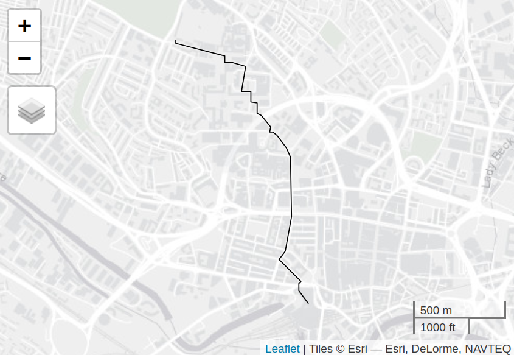

if (!require("pak")) install.packages("pak")
pak::pkg_install(c("sf", "tidyverse", "stplanr", "dodgr", "opentripplanner", "tmap", "osmextract", "lwgeom"))Routing and route network analysis
1 Introduction
This session demonstrates routing and network analysis techniques. By the end of this session, you should be able to:
- Understand the principles of routing and network analysis
- Use routing services such as OpenTripPlanner for multi-modal routing
- Create and analyze route networks
- Apply network centrality measures
1.1 Prerequisites
library(sf)
library(tidyverse)
library(stplanr)
library(dodgr)
library(opentripplanner)
library(tmap)
library(osmextract)
library(lwgeom)
tmap_mode("view")2 OpenTripPlanner Routing
OpenTripPlanner (OTP) is a powerful open-source routing engine that supports multi-modal transportation planning.
2.1 Connecting to OTP
otpcon = otp_connect(
hostname = "otp.robinlovelace.net",
ssl = TRUE,
port = 443,
router = "west-yorkshire"
)2.2 Basic Routing
# Create a simple walking route from ITS Leeds to Leeds Railway Station
from = stplanr::geo_code("Institute for Transport Studies, Leeds")
to = stplanr::geo_code("Leeds Railway Station")
route_walk = otp_plan(
otpcon = otpcon,
fromPlace = from, # c(-1.555, 53.810), # Longitude, Latitude
toPlace = to, # c(-1.54710, 53.79519),
mode = "WALK"
)
qtm(route_walk)You should see something like this, a good route from ITS to the train station. Zoom into the interactive map at leeds_walk_route.html in the releases to see if it’s the same route you would take.

Note
You can download and view the resulting map with the following code:
download.file("https://github.com/tdscience/dstp/releases/download/v1/leeds_walk_route.html")
browseURL("leeds_walk_route.html", browser = "firefox")2.3 Multi-Modal Routing
# Public transport route
route_transit = otp_plan(
otpcon = otpcon,
fromPlace = c(-1.55555, 53.81005),
toPlace = c(-1.54710, 53.79519),
mode = c("WALK", "TRANSIT")
)
# Cycling with public transport
route_bike_transit = otp_plan(
otpcon = otpcon,
fromPlace = c(-1.55555, 53.81005),
toPlace = c(-1.54710, 53.79519),
mode = c("BICYCLE", "TRANSIT")
)3 Working with Desire Lines
Desire lines represent travel demand between origin-destination pairs.
3.1 Loading OD Data
We’ll import and apply basic preprocessing steps to desire lines from the National Trip End Model (NTEM). Note that we keep the raw data unchanged for reproducibility.
# Load desire lines data
desire_lines_raw = read_sf("https://github.com/ITSLeeds/TDS/releases/download/22/NTEM_flow.geojson")
desire_lines = desire_lines_raw |>
select(from, to, all, walk, drive, cycle)
# Load zone centroids
centroids = read_sf("https://github.com/ITSLeeds/TDS/releases/download/22/NTEM_cents.geojson")We’ll also create a smaller subset of the desire lines for demonstration purposes.
# Filter for top 5 desire lines by total trips
desire_top = desire_lines |>
slice_max(order_by = all, n = 5)3.2 Visualizing Desire Lines
tm_shape(desire_lines) +
tm_lines(
col = "all",
lwd = "all",
lwd.scale = tm_scale_continuous(values.scale = 10),
col.scale = tm_scale_continuous(values = "-viridis")
) +
tm_shape(centroids) +
tm_dots(fill = "red", size = 0.5)Extract start and end points as follows:
# Extract start and end points
fromPlace = sf::st_sf(
data.frame(id = desire_top$from),
geometry = lwgeom::st_startpoint(desire_top)
)
toPlace = sf::st_sf(
data.frame(id = desire_top$to),
geometry = lwgeom::st_endpoint(desire_top)
)3.3 Calculating Routes
# Calculate driving routes for top desire lines
routes_drive_top = otp_plan(
otpcon = otpcon,
fromPlace = fromPlace,
toPlace = toPlace,
fromID = fromPlace$id,
toID = toPlace$id,
mode = "CAR"
)3.4 Visualizing Routes
tm_shape(routes_drive_top) +
tm_lines(col = "blue", lwd = 3)4 Route Network Analysis
Route networks aggregate individual routes to show cumulative traffic flow.
4.1 Joining routes to create a route network
The full dataset can be loaded as follows:
# Load more comprehensive route data
routes_drive = read_sf("https://github.com/ITSLeeds/TDS/releases/download/22/routes_drive.geojson")
routes_transit = read_sf("https://github.com/ITSLeeds/TDS/releases/download/22/routes_transit.geojson")We’ll join this with the desire lines data to get trip counts associated with each route.
names(desire_lines)
nrow(desire_lines)
names(routes_drive)
nrow(routes_drive)
nrow(routes_transit)routes_drive_joined = dplyr::left_join(
routes_drive |>
rename(from = fromPlace, to = toPlace),
desire_lines |>
sf::st_drop_geometry()
)routes_transit_joined = dplyr::left_join(
routes_transit |>
rename(from = fromPlace, to = toPlace),
desire_lines |>
sf::st_drop_geometry()
)4.2 Aggregating Routes
# Create route network by aggregating overlapping routes
rnet_drive = overline(routes_drive_joined, "drive")4.3 Visualizing Route Networks
tm_shape(rnet_drive) +
tm_lines(
col = "drive",
col.scale = tm_scale_intervals(values = "-viridis", style = "jenks"),
lwd = 2
)5 Network Centrality Analysis
Network centrality measures help identify critical infrastructure.
5.1 Preparing Network Data
zones = zonebuilder::zb_zone("Leeds", n_circles = 3)
study_area = zones |>
sf::st_union()
extra_tags = c(
"maxspeed",
"lit",
"cycleway"
)
roads = osmextract::oe_get_network(
mode= "driving",
place = study_area,
boundary = study_area,
boundary_type = "clipsrc",
extra_tags = extra_tags
)
# Filter for main roads
roads = roads |>
filter(!is.na(highway)) |>
filter(highway %in% c("primary", "secondary", "tertiary", "residential", "unclassified")) |>
sf::st_cast("LINESTRING")
# Create network graph
graph = weight_streetnet(roads)5.2 Calculating Centrality
# Calculate betweenness centrality
centrality = dodgr_centrality(graph)
# Convert back to spatial format
centrality_sf = dodgr_to_sf(centrality)5.3 Visualizing Centrality
tm_shape(centrality_sf) +
tm_lines(
col = "centrality",
col.scale = tm_scale_intervals(values = "-viridis", style = "fisher"),
lwd = 3
)6 Exercises
6.1 Exercise 1: Basic Routing
- Connect to the OpenTripPlanner server
- Calculate a walking route between two points in Leeds
- Visualize the route on a map
# Your code here6.2 Exercise 2: Multi-Modal Routing
- Calculate routes using different modes (walk, transit, bicycle+transit)
- Compare the travel times and distances
- Visualize the different route options
# Your code here6.3 Exercise 3: Desire Lines Analysis
- Load the desire lines dataset
- Filter for the top 5 desire lines by total trips
- Create a map showing the desire lines colored by mode share
# Your code here6.4 Exercise 4: Route Network Creation
- Load route data for a specific mode with
osmextract::oe_get_network()(hint: run?oe_get_networkto find out which modes are available), theosmnxPython package, or any other source - Assign values to links and visualise the route network
- Compare the route network visualization with individual routes
# Your code here6.5 Exercise 5: Network Centrality
- Download road network data for a small area
- Calculate betweenness centrality
- Identify the most critical roads in the network
# Your code here6.6 Exercise 6: Advanced Routing
- Read over the routing engine setup example and (as a bonus) try to set up your own instance of OpenTripPlanner using Java or Docker.
6.7 Exercise 7: Vehicle routing with traffic (azuremapsr)
7 Further Reading
8 Homework
- Experiment with different routing modes and parameters
- Create a route network for your local area
- Analyze network centrality for a transport network
Reuse
Copyright
© 2025 Robin Lovelace